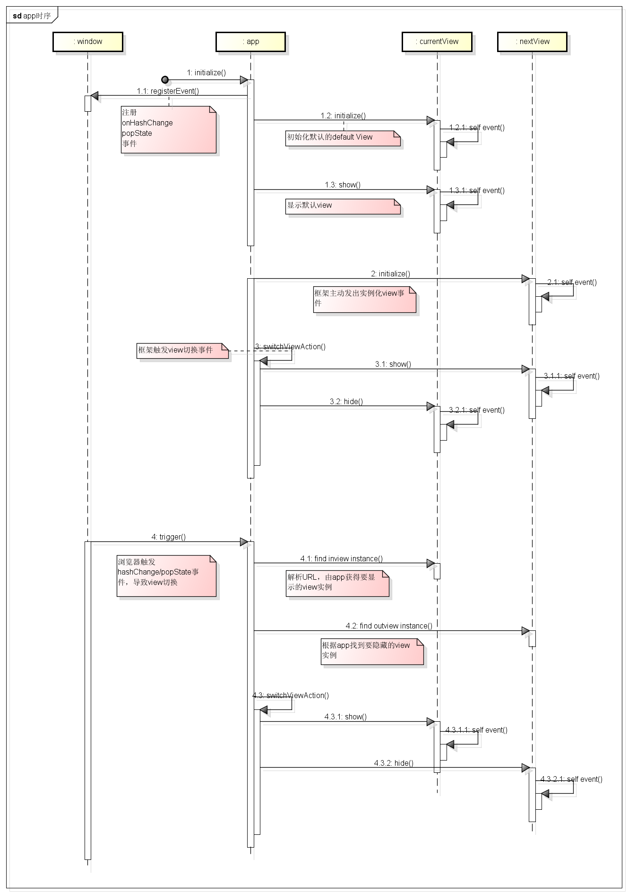
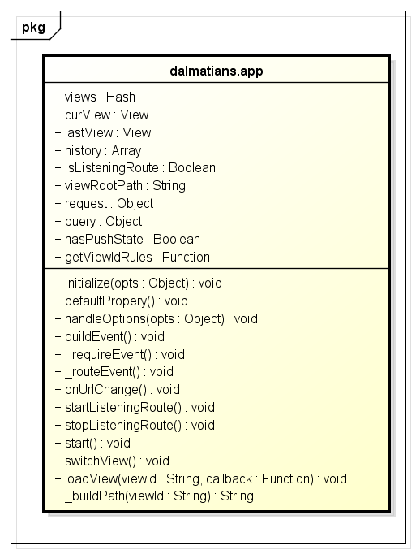

前言
之前，我们形成了页面片相关的mvc结构，但是该结构还仅适用于view（页面）级，那么真正的全局控制器app应该干些什么事情呢？我觉得至少需要干这些：
功能点
① 提供URL解析机制，以便让控制器可以根据URL获得当前是要加载哪个view的实例，比如
http://www.baidu.com/index.html#index
http://www.baidu.com/index
若是使用hashChange实现浏览器跳转便直接取出index这个键值；
若是使用pushState方案的话，便需要业务同事给出取出URL键值的方法，最终我们需要得到index这个键值
② app应该保留各个view的实例，并且维护一个队列关系
以现在博客园为例，我们可能具有两个view页面片：index->detail
我们首次便是加载index这个view，点击其中一个项目便加载detail这个view，这个时候app是应该同时保存两个view，并且内部要维系一个访问顺序队列
这个队列最好可与浏览器保存一致，若不能保存一致，后期便可能会出现点击浏览器后退死循环的问题
③ app应该提供view实例化的方法
所以的view实例若无特殊原因，皆应该由app生成，app应该具有实例化view的能力，view一般使用AMD规范管理，这里涉及异步加载
PS：真实工作环境中，view需要自建一套事件机制，比如实例化时候要触发什么事件，显示时候要触发什么事件，皆需要有，app只会负责
实例化->显示->隐藏
④ app应该提供监控浏览器事件，每次自动加载各个view
如上面所述，app会注册一个hashChange事件或者popState事件以达到改变URL不刷新页面的功能，这个功能主要用于用户点击浏览器原生后退键
以上便是全局控制器app该干的事情，按程序逻辑说，应该是这样的
程序逻辑
用户键入一个URL，进到一个单页应用，于是首次会发生以下事情：
① 属性初始化，并且为浏览器绑定hashChange/popState事件
② 解析URL取出，当前需要加载的VIEW键值，一般而言是index，或者会有一些参数
③ 根据键值使用requireJS语法加载view类，并且产生实例化操作
④ 实例化结束后，便调用view的show方法，首屏view显示结束，内部会触发view自身事件达到页面渲染的效果
用户点击其中一个项目会触发一个类似forward/back的操作，这个时候流程会有所不同：
① app首先会屏蔽监控浏览器的变化，因为这个是用户主动触发，不应该触发hashChange类似事件
② app开始加载forward的view，这里比如是list，将list实例化，然后执行index的hide方法，执行list的show方法，这里便完成了一次view的切换
整个逻辑还可能发生动画，我们这里暂时忽略。
这时当用户点击浏览器后退，情况又会有所不同
① app中的hashChange或者popstate会捕捉到这次URL变化
② app会解析这个URL并且安装之前约定取出键值，这个时候会发现app中已经保存了这个view的实例
③ 直接执行list view的hide方法，然后执行index view的show方法，整体逻辑结束
整个app要干的事情基本就是这样，这种app逻辑一般为3-7百行，代码少，但是其实现的功能比较复杂，往往是一个单页应用的核心！
Backbone的控制器
事实上Backbone只有一个History，并不具有控制器的行为，总的来说，Backbone最为有用的就是其view一块的逻辑，我们很多时候也只是需要这段逻辑
其路由功能本身没有什么问题，实现也很好，但是我们可以看到他并未完成我们以上需要的功能，所以对我来说，他便只是一个简单的路由功能，不是控制器
Backbone的路由首先会要求你将一个应用中的所有url与键值全部做一个映射，比如
1 var App = Backbone.Router.extend({ 2 routes: { 3 "": "index", // #index 4 "index": "index", // #index 5 "detail": "detail" // #detail 6 }, 7 index: function () { 8 var index = new Index(this.interface); 9 10 }, 11 detail: function () { 12 var detail = new Detail(this.interface); 13 14 }, 15 initialize: function () { 16 17 }, 18 interface: { 19 forward: function (url) { 20 window.location.href = ('#' + url).replace(/^#+/, '#'); 21 } 22 23 } 24 25 });
然后整体的功能完全依赖于URL的变化触发，那么意味着一个单页应用中所有的url我都需要在此做映射，我这里当然不愿意这样做
事实上我做变化时候，只需要一个view类的键值即可，所以我们这里便直接跳过了路由映射这个逻辑
每次浏览器主动发生的变化，我们直接解析其URL，拿出我们要的view 键值，从而加载这个view的实例
我们的控制器
根据前面的想法，我们的控制器一定会包含以下接口：
① 解析URL形成view键值的接口，并且该接口可被各业务覆盖：
getViewIdRules
② 异步加载View类以及实例化view的接口
loadView
③ 浏览器事件监听
buildEvent(hashChange/popState)
以上是几个关键接口，其它接口，如view切换也需要提出，这里我们首先得得出整个app的时序

其时序简单分为三类，其实还有更加复杂的情况，我们这里暂时不予考虑
① 首先是初始化的操作，首次便只需要解析URL，加载默认view实例并且显示即可，这个时候虽然注册了hashChange/popState事件，不会触发其中逻辑
② 其次是框架主动行为，主动要加载第二个view（view），这个时候便会实例化之，然后触发自身switchview事件，切换两个view
③ 最后是浏览器触发hashChange/popState事件，导致框架发生切换view的事件，这个时候两个view实例已经存在，所以只需要切换即可
PS：每次框架只需要执行简单的show、hide方法即可，view内部自有其逻辑处理余下事情，这些我们留待后面说
时序图，出来后，我们就要考虑我们这个全局控制器app，的方法了，这里先给出类图再做一一实现：

这里做初步的实现：
1 "use strict"; 2 var Application = _.inherit({ 3 4 //设置默认的属性 5 defaultPropery: function () { 6 7 //存储view队列的hash对象，这里会新建一个hash数据结构，暂时不予理睬 8 this.views = new _.Hash(); 9 10 //当前view 11 this.curView; 12 13 //最后访问的view 14 this.lastView; 15 16 //各个view的映射地址 17 this.viewMapping = {}; 18 19 //本地维护History逻辑 20 this.history = []; 21 22 //是否开启路由监控 23 this.isListeningRoute = false; 24 25 //view的根目录 26 this.viewRootPath = 'app/views/'; 27 28 //当前对应url请求 29 this.request = {}; 30 31 //当前对应的参数 32 this.query = {}; 33 34 //pushState的支持能力 35 this.hasPushState = !!(this.history && this.history.pushState); 36 37 //由用户定义的获取viewid规则 38 this.getViewIdRules = function (url, hasPushState) { 39 return _.getUrlParam(url, 'viewId'); 40 }; 41 42 }, 43 44 //@override 45 handleOptions: function (opts) { 46 _.extend(this, opts); 47 }, 48 49 initialize: function (opts) { 50 51 this.defaultPropery(); 52 this.handleOptions(opts); 53 54 //构造系统各个事件 55 this.buildEvent(); 56 57 //首次动态调用，生成view 58 this.start(); 59 }, 60 61 buildEvent: function () { 62 this._requireEvent(); 63 this._routeEvent(); 64 }, 65 66 _requireEvent: function () { 67 requirejs.onError = function (e) { 68 if (e && e.requireModules) { 69 for (var i = 0; i < e.requireModules.length; i++) { 70 console.log('抱歉，当前的网络状况不给力，请刷新重试!'); 71 break; 72 } 73 } 74 }; 75 }, 76 77 //路由相关处理逻辑，可能是hash，可能是pushState 78 _routeEvent: function () { 79 80 //默认使用pushState逻辑，否则使用hashChange，后续出pushState的方案 81 $(window).bind('hashchange', _.bind(this.onURLChange, this)); 82 83 }, 84 85 //当URL变化时 86 onURLChange: function () { 87 if (!this.isListeningRoute) return; 88 89 }, 90 91 startListeningRoute: function () { 92 this.isListeningRoute = true; 93 }, 94 95 stopListeningRoute: function () { 96 this.isListeningRoute = false; 97 }, 98 99 //解析的当前url，并且根据getViewIdRules生成当前viewID 100 parseUrl: function (url) { 101 102 }, 103 104 //入口点 105 start: function () { 106 var url = decodeURIComponent(window.location.hash.replace(/^#+/i, '')).toLowerCase(); 107 this.history.push(window.location.href); 108 //处理当前url，会将viewid写入request对象 109 this.parseUrl(url); 110 111 var viewId = this.request.viewId; 112 113 //首次不会触发路由监听，直接程序导入 114 this.switchView(viewId); 115 116 }, 117 118 //根据viewId判断当前view是否实例化 119 viewExist: function (viewId) { 120 return this.views.exist(viewId); 121 }, 122 123 //根据viewid，加载view的类，并会实例化 124 //注意，这里只会返回一个view的实例，并不会显示或者怎样，也不会执行app的逻辑 125 loadView: function (viewId, callback) { 126 127 //每个键值还是在全局views保留一个存根，若是已经加载过便不予理睬 128 if (this.viewExist(viewId)) { 129 _.callmethod(callback, this, this.views.get(viewId)); 130 return; 131 } 132 133 requirejs([this._buildPath(viewId)], $.proxy(function (View) { 134 var view = new View(); 135 136 this.views.push(viewId, view); 137 138 //将当前view实例传入，执行回调 139 _.callmethod(callback, this, view); 140 141 }, this)); 142 }, 143 144 //根据viewId生成路径 145 _buildPath: function (viewId) { 146 return this.viewMapping[viewId] ? this.viewMapping[viewId] : this.viewRootPath + viewId; 147 }, 148 149 //注意，此处的url可能是id，也可能是其它莫名其妙的，这里需要进行解析 150 forward: function (viewId) { 151 152 //解析viewId逻辑暂时省略 153 //...... 154 this.switchView(viewId); 155 156 }, 157 158 //后退操作 159 back: function () { 160 161 }, 162 163 //view切换，传入要显示和隐藏的view实例 164 switchView: function (viewId) { 165 if (!viewId) return; 166 167 this.loadView(viewId, function (view) { 168 this.lastView = this.curView; 169 this.curView = view; 170 171 if (this.curView) this.curView.show(); 172 if (this.lastView) this.lastView.show(); 173 174 }); 175 } 176 177 });
结语
今天，我们一起分析了全局控制器app应该做些什么，并且整理了下基本思路，那么我们这个星期的主要目的便是实现这个app，今日到此结束。